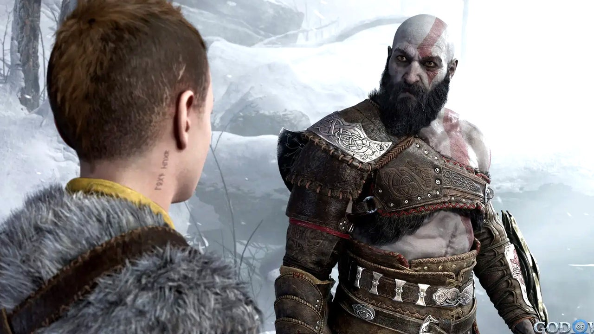
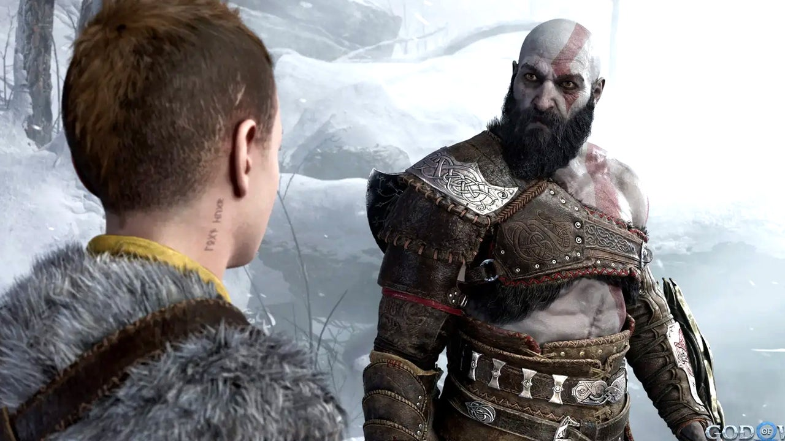

God of War: Ragnarök
De reis van Kratos gaat verder!
In deze epiloog van God of War Ragnarök gaat Kratos naar Walhalla,
een nieuwe locatie in de noordse saga van God of War. Hij wordt
geconfronteerd met echo's uit zijn verleden en moet uitdagingen
voltooien om zichzelf te overwinnen en zijn pad te vervolgen.
Actie
Avontuur

 

Systeemeisen
OS: Windows 10 64-bit
Processor: Intel Core i5-6600K / AMD Ryzen 5 2600X
Memory: 16GB Ram
Graphics: Nvidia GeForce RTX 2060 / AMD Radeon RX 5700 XT
DirectX: Version 12
Storage: 110 GB Beschikbare ruimte